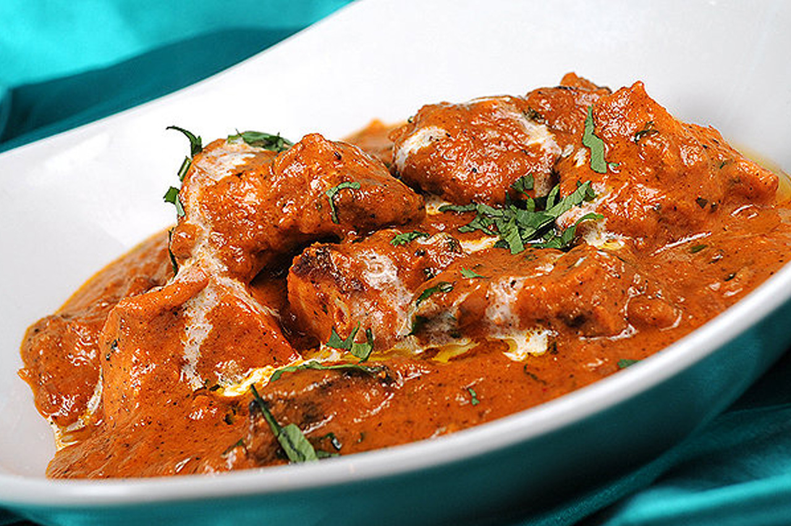

Chicken-Lababdar

Chicken Lababdar is a rich and creamy Indian curry dish that features tender chicken pieces cooked in a flavorful tomato-based gravy. The term "Lababdar" refers to something that is rich, creamy, and luxurious, and this dish certainly lives up to its name. It's a favorite in many North Indian households and is often served with naan, rice, or roti for a hearty meal.
Ingredients
- 500 grams boneless chicken, cut into bite-sized pieces
- 2 onions, finely chopped
- 2 tomatoes, pureed
- 2 tablespoons ginger-garlic paste
- 1 teaspoon cumin seeds
- 1 teaspoon garam masala
- 1 teaspoon turmeric powder
- 1 teaspoon red chili powder
- 1 teaspoon coriander powder
- 1/2 cup heavy cream
- 2 tablespoons butter or ghee
- 2 tablespoons oil
- Salt to taste
- Fresh coriander leaves for garnish
Steps:
- Marinate the Chicken: In a mixing bowl, combine the chicken pieces with ginger-garlic paste, turmeric powder, red chili powder, and salt. Mix well to coat the chicken evenly with the spices. Let it marinate for at least 30 minutes.
- Sauté the Onions: Heat oil in a pan over medium heat. Add the chopped onions and sauté until they turn golden brown and caramelized.
- Prepare the Tomato Base: Once the onions are caramelized, add the tomato puree to the pan. Cook the mixture until the raw smell of tomatoes disappears and the oil starts to separate from the sides.
- Spice it Up: Add the garam masala, coriander powder, and cumin seeds to the pan. Stir well and cook for another couple of minutes to toast the spices
- Cook the Chicken: Now, add the marinated chicken pieces to the pan. Mix them well with the onion-tomato mixture. Cook the chicken until it is almost done, stirring occasionally.
- Add Cream: Once the chicken is almost cooked, pour in the heavy cream. Stir well to combine all the ingredients. Adjust the consistency of the gravy by adding water if needed.
- Simmer: Lower the heat and let the chicken simmer in the creamy gravy for another 5-10 minutes, allowing the flavors to meld together.
- Finish with Butter: Finally, add the butter or ghee to the chicken lababdar. Mix it well until the butter melts and incorporates into the gravy, giving it a rich and glossy finish.
- Garnish and Serve: Garnish the Chicken Lababdar with freshly chopped coriander leaves. Serve hot with naan, rice, or roti for a delicious and satisfying meal. Enjoy the creamy and flavorful goodness of this classic Indian dish